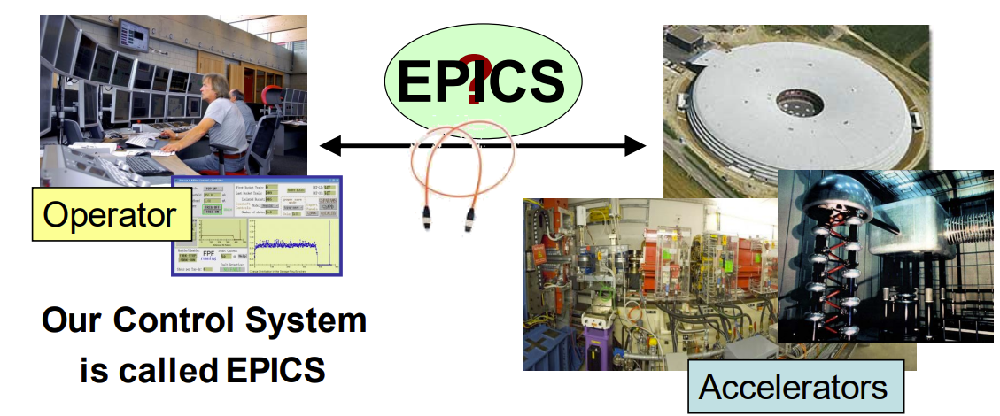
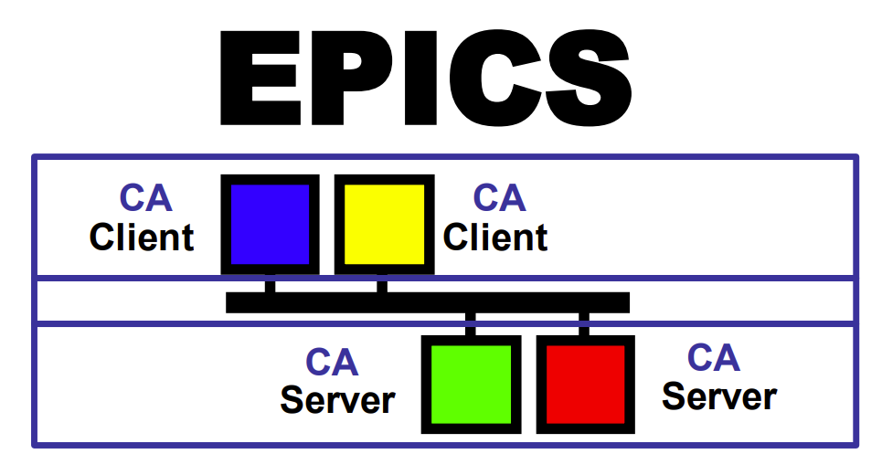
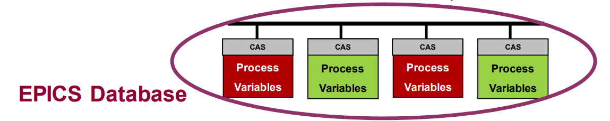
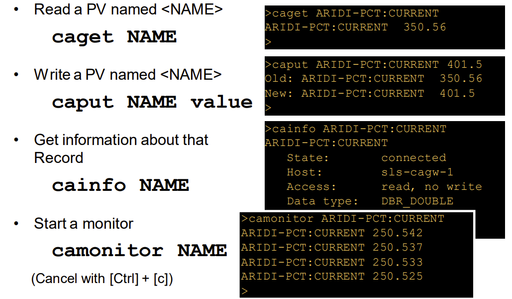
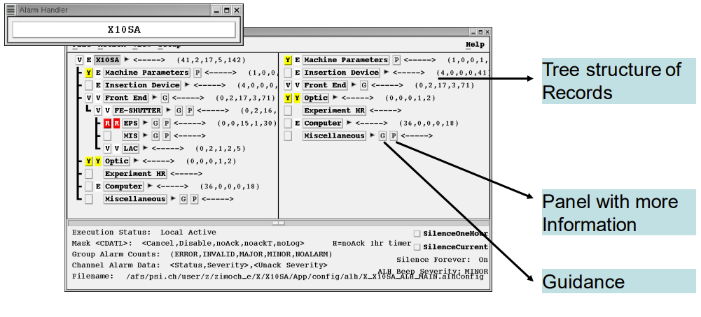
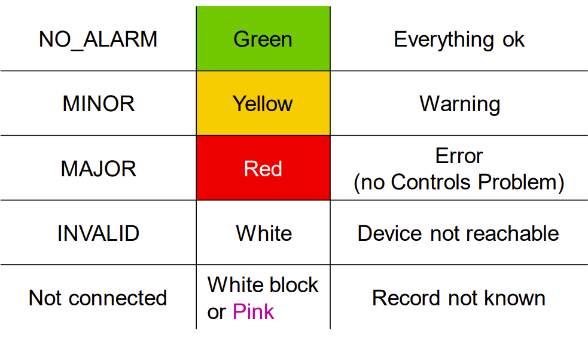
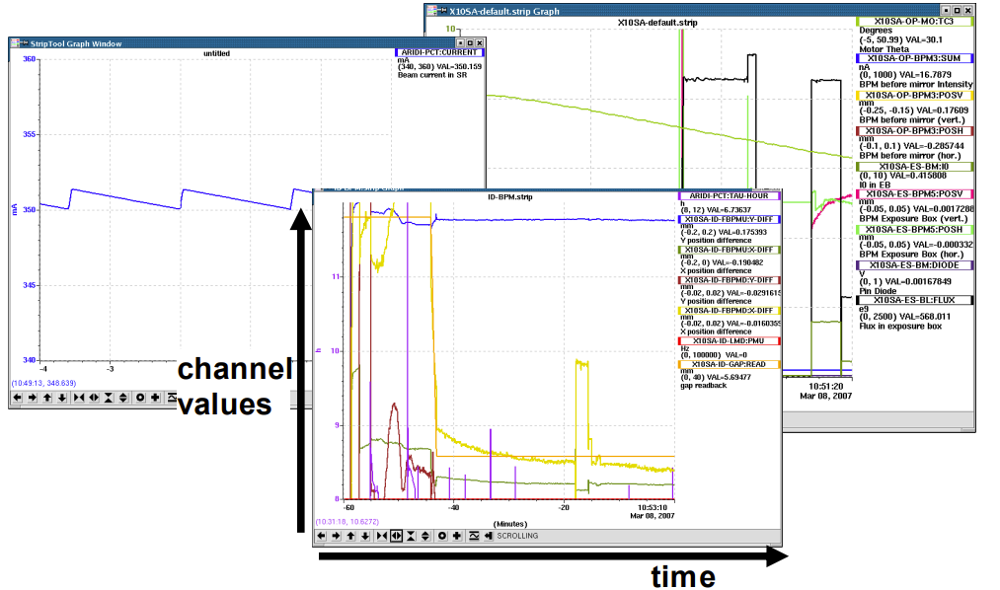
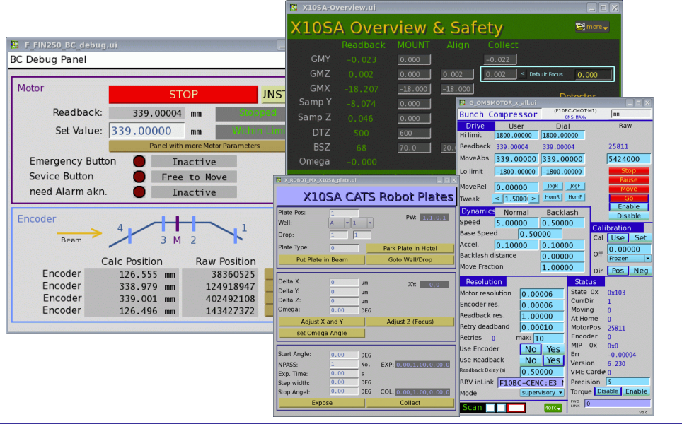
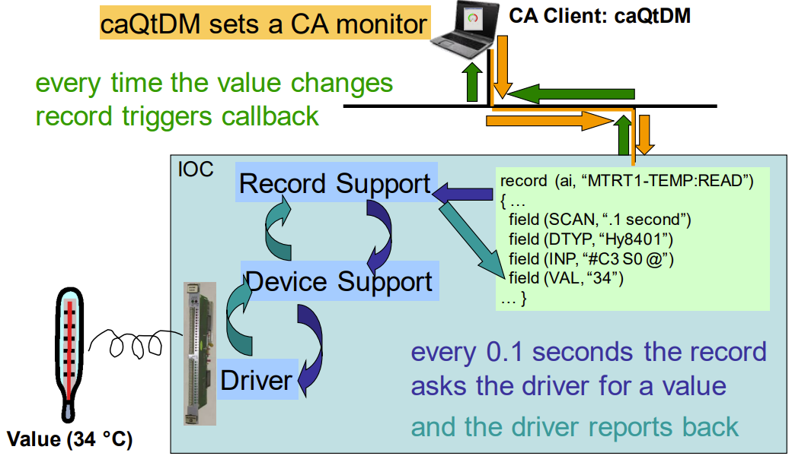
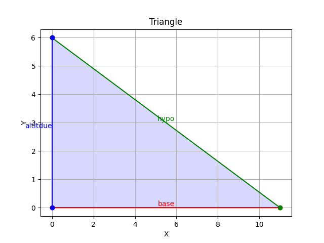

Control Engineering
Control Systems and Introduction to the EPICS Toolkit
Accelerator Control System: connects the Operator in the control room with the accelerator hardware. The control room might not be near the accelerator.
For example: SESAME has N Computers, N magnets, N vacuum pumps, 5 beamlines, a cooling system, RF system, power supply system, … etc. which all need to be closely and heavily controlled.
Experimental Physics and Industrial Control System (EPICS): is a collaboration software tool kit, that provides a control system architecture suitable for research and industrial facilities such as accelerators. EPICS uses a Client/Server and Publish/Subscribe methods and a Channel Access network protocol (3-tier architecture or 3 layer model).
EPICS is an open-sourced project assembeled by multiple collaborators in the accelerator industry, 12+ accelerators around the world have provided assistance in its development and still use it to this day.
Channel Access: A protocol to transfer data over network, a single data unit is called a Process Variable. The entire set of Process Variables establish a Distributed Real-time Database of machine statis, information and control parameters.
Channel Access Network Flow:
Query: broadcast and connection request.
Answer: direct connection
All further queries and answers work directly (Point-To-Point)
Main Access Commands in EPICS:
caget: returns the value of the PV or any sub-fields in the PV.caput: sets a value of a PV or a sub-field in a PV to a desired value and displays the old and newly assigned values.camonitor: sets up a monitor and continuously prints incoming changing values for PVs.cainfo: Prints all available channel status and information for a PV.
Packages that required for EPICS installation
gcc: GCC stands for GNU Compiler Collection. It is a collection of programming language compilers and tools, primarily used for compiling and linking C, C++, and Fortran programs. GCC supports multiple platforms and is widely used in the development of software applications.
gcc-C++:This package is an extension of GCC and specifically includes the C++ compiler. It is required if you want to compile and build C++ programs using GCC. The package provides the necessary libraries and headers for C++ development.
# To install the GCC compiler, run the following commands:
sudo dnf clean all
sudo dnf update
sudo dnf group list
sudo dnf group install "Development Tools"
make : Make is a utility used for building and managing software projects. It is used to automate the process of building executable programs and libraries from source code. The “make” utility uses a “Makefile” to define the build process. It is a text file that contains instructions for the “make” utility to execute. The “make” utility is often used in conjunction with the GCC compiler to build software projects. The “make” utility is included in the “Development Tools” package group. If you have already installed the “Development Tools” package group, you do not need to install the “make” utility separately.
# To install the make the following command:
sudo yum install make
gcc-toolset-9-make: This package is a part of the GCC Toolset, which is a collection of development tools and libraries. It includes the “make” utility, which is used to manage and build software projects. The version number “9” in the package name refers to the specific version of the GCC Toolset. It is likely that this package includes GCC version 9 and the associated “make” utility.
# To install the gcc-toolset-9-make from source the following command:
wget https://dl.rockylinux.org/pub/rocky/8/Devel/x86_64/os/Packages/g/gcc-toolset-9-make-devel-4.2.1-2.el8.x86_64.rpm
# To install the gcc-toolset-9-make from source the following command:
sudo yum install gcc-toolset-9-make-devel-4.2.1-2.el8.x86_64.rpm
readline-devel: The readline library is used for line editing during command-line input. It provides features like command history, editing capabilities, and tab completion. The “readline-devel” package contains the development files and headers needed to compile programs that use the readline library. If you are building a program that requires readline functionality, you would need this package.
# To install the GCC compiler, run the following command:
sudo yum install readline-devel
perl-ExtUtils-Install: Perl is a popular scripting language used for various purposes, including system administration and web development. The “perl-ExtUtils-Install” package is a Perl module used for installing Perl extensions and modules. It provides tools and utilities to simplify the installation process of Perl packages.
# To install the perl-ExtUtils-Install package, run the following command:
sudo yum install perl-ExtUtils-Install
EPICS Installation on Rocky Linux
To install EPICS on Rocky Linux, follow these steps:
# To install epics from source the following command:
wget https://epics-controls.org/download/base/base-3.15.6.tar.gz
# Then extract the file
tar -xvf base-3.15.6.tar.gz
# Then go to the extracted directory
cd base-3.15.6
# Then run the following command
make
# Then run the following command
make install
Then you have to add the following to the .bashrc file which where you can store your environment variables.
# To open the .bashrc file
vim ~/.bashrc
# Then add the following lines to the file
export EPICS_BASE=${HOME}/base-3.15.6
export EPICS_HOST_ARCH=$(${EPICS_BASE}/startup/EpicsHostArch)
export PATH=${EPICS_BASE}/bin/${EPICS_HOST_ARCH}:${PATH}
Then to check if the installation is successful, run the following command:
# Run the following command to check if the installation is successful
caget
# Then you should see the following output
No pv name specified. ('caget -h' for help.)
if so then the installation is successful.
EPICS IOC Creation
# To create a new IOC
mkdir testIOC
cd testIOC
makeBaseApp.pl -t -i ioc iocName
cd configure
vim RELEASE
# make sure everything is correct in the file
cd
cd testIOC
cd testApp
cd db
vim test.db
Add the following lines to the test.db file
cd
cd testIOC
vim Makefile
Only the following lines should be in the Makefile file.
record(ai, “test:first_pv”) {
field(DESC,”test first record”) field(VAL, “40”)
}
cd
cd testIOC
vim Makefile
IOC Database
In the IOC database, there are units of PV’s called Records. Each of these records have a specific type that allows them to alter the functionality of the PV. In every one of these records, there are fields, in which include attributes and some of the possible functions that that the PV could do.
Record: an object with a unique name, properties (fields) and contains information (data) where different data types can appear in different fields. A record also has the ability to perform actions on data.
Naming a PV: a PV is comprised of two parts - The record name - The name of a field belonging to that record
For example: ARIDI-PCT:CURRENT. in this case most record fields can be accessed individually.
Note: if no field name is given, Channel Access will default to using the .VAL field.
A general structure of what you might see in an IOC in terms of records and fields is the following:
record(ai, "test:Altitude_PV") {
field(INP, "@user")
field(VAL, 0.0)
}
record(ai, "test:Base_PV") {
field(INP, "@user")
field(VAL, 0.0)
}
record(calc, "test:Calc_PV") {
field(DESC, "Calculation of side C (hypotenuse)")
field(CALC, "SQR(A*A + B*B)")
field(INPA, "test:Altitude_PV CP")
field(INPB, "test:Base_PV CP")
}
As mentioned previously, altering these records could be done using the
The documentation for the list of records on EPICS and their respective fields can be found on this page: https://epics.anl.gov/EpicsDocumentation/AppDevManuals/RecordRef/Recordref-3.html
After curating your IOC database, in order to interact with it one would have to use a Channel Access (CA) Client.
Some of the most used CA clients are the following:
Command line tools(caget,caput,…)
ALH: Alarm Handler
 StripTool: Strip-chart Plotting Tool
catQtDM: Display Manager
 
IOC Hypotenuse Project Exercise
After knowing the Database section this is a small Exercise that would help you to put your knowledge into practice.
Define a record that calculates the hypotenuse of a right triangle. The record should have two input fields, A and B, and one output field, VAL. The record should calculate the hypotenuse using the following formula:
- To test :in your terminal
caput <record_name>:A <value>
caput <record_name>:B <value>
caget <record_name>
record(ai, "test:Altitude_PV") {
field(INP, "@user")
field(VAL, 0.0)
}
record(ai, "test:Base_PV") {
field(INP, "@user")
field(VAL, 0.0)
}
record(calc, "test:Calc_PV") {
field(DESC, "Calculation of side C (hypotenuse)")
field(CALC, "SQR(A*A + B*B)")
field(INPA, "test:Altitude_PV CP")
field(INPB, "test:Base_PV CP")
}
caput test:Altitude_PV 3
caput test:Base_PV 4
caget test:Calc_PV
Then you should see the answer in the terminal
PV Triangle Plotter with Python
A Python script for manipulating Process Variables (PV) and plotting a triangle based on the given base and altitude values.
import sys
import argparse
import matplotlib
import matplotlib.pyplot as plt
import numpy as np
from epics import caget, caput, cainfo
def ca_put_info(pv, value):
caput(pv, value)
def ca_get_info(pv):
return caget(pv)
def draw_triangle(base, altitude):
# Define the triangle vertices
vertices = [(0, 0), (base, 0), (0, altitude), (0, 0)]
# Extract the x and y coordinates from the vertices
x = [vertex[0] for vertex in vertices]
y = [vertex[1] for vertex in vertices]
# Plot the triangle with filled sides
plt.figure()
plt.plot(x[:2], y[:2], '-o', color='red')
plt.plot(x[1:3], y[1:3], '-o', color='green')
plt.plot(x[2:], y[2:], '-o', color='blue')
# Create a cool gradient color map
cmap = matplotlib.cm.get_cmap('cool')
# Fill the triangle with a cool gradient color
plt.fill_between(x[:2], y[:2], color=cmap(0.3), alpha=0.3)
plt.fill_between(x[1:3], y[1:3], color=cmap(0.5), alpha=0.3)
plt.fill_between(x[2:], y[2:], color=cmap(0.7), alpha=0.3)
# Add labels to each side
plt.text((x[0] + x[1]) / 2, (y[0] + y[1]) / 2, 'base', ha='center', va='bottom', color='red')
plt.text((x[1] + x[2]) / 2, (y[1] + y[2]) / 2, 'hypo', ha='center', va='bottom', color='green')
plt.text((x[0] + x[2]) / 2, (y[0] + y[2]) / 2, 'altitdue', ha='right', va='top', color='blue')
plt.xlabel('X')
plt.ylabel('Y')
plt.title('Triangle')
plt.grid(True)
plt.savefig('triangle_plot.png')
def main(args):
if len(args) != 2:
print('Only 2 numbers are allowed')
sys.exit(1)
else:
print('Args:', args)
print(caget('test:Base_PV'))
ca_put_info('test:Base_PV', args[0])
ca_put_info('test:Altitude_PV', args[1])
print(ca_get_info('test:Calc_PV'), 'is the calculated value')
base = args[0]
altitude = args[1]
draw_triangle(base, altitude)
if __name__ == '__main__':
parser = argparse.ArgumentParser(
description='Process two numbers for PV manipulation')
parser.add_argument('number1', type=int, help='Base number')
parser.add_argument('number2', type=int, help='Altitude number')
args = parser.parse_args()
numbers = [args.number1, args.number2]
main(numbers)
Usage
The script requires two command-line arguments: number1 and number2. These arguments represent the base and altitude values respectively.
$ python pv_triangle_plotter.py number1 number2
Arguments
- number1
- number2
Base and altitude numbers used to calculate the area and draw a triangle.
Both arguments should be integers.
Functionality
Process Variable Manipulation:
The script uses the epics library to interact with Process Variables (PVs) using the Channel Access (CA) protocol. The following functions are used for PV manipulation:
ca_put_info(pv, value): Writes a value to the specified PV.ca_get_info(pv): Reads the value from the specified PV.
Triangle Plotting:
The script includes a function named
draw_triangle(base, altitude)that plots a triangle based on the given base and altitude values. The triangle is plotted using matplotlib.The function performs the following steps:
Defines the vertices of the triangle based on the given base and altitude.
Extracts the x and y coordinates from the vertices.
Plots the sides of the triangle using different colors.
Fills the triangle with a gradient color.
Adds labels to each side of the triangle.
Sets the axis labels, title, and grid for the plot.
Saves the plot as a PNG file.
Note: The matplotlib library is required to run this script.
Example
To calculate the area and plot a triangle with a base of 5 and an altitude of 8, run the following command:
$ python pv_triangle_plotter.py 5 8
This will write the base and altitude values to the corresponding PVs, calculate the area using a separate PV, and save the triangle plot as triangle_plot.png.
{kind=link}